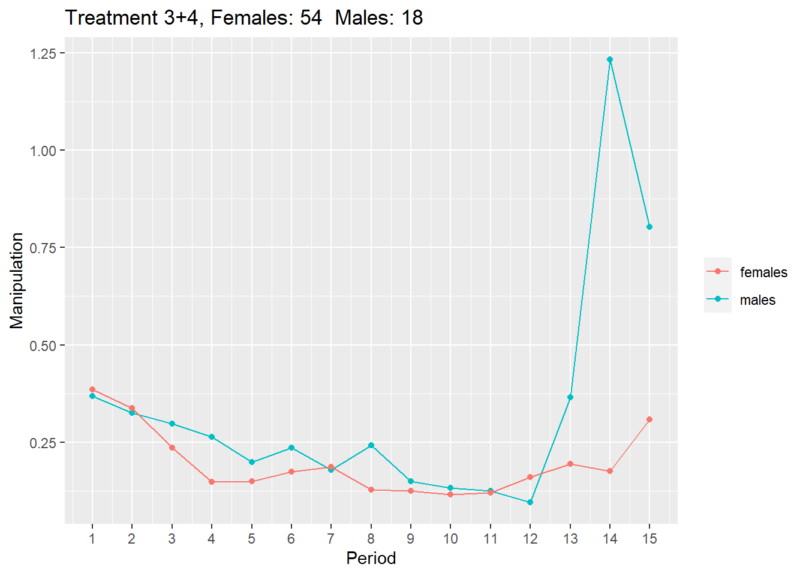

\(Manipulation_{i,t} = \frac{|inform_{i,t}-belief_{i,t}|}{belief_{i,t}}\)
\(Manipulation_{males,t} =\sum_{i=1}^{males} \frac{Manipulation_{i,t}}{males}\)
\(Manipulation_{females,t} =\sum_{i=1}^{females} \frac{Manipulation_{i,t}}{females}\)
| p1 | p2 | p3 | p4 | p5 | p6 | p7 | p8 | p9 | p10 | p11 | p12 | p13 | p14 | p15 | |
|---|---|---|---|---|---|---|---|---|---|---|---|---|---|---|---|
| Females | 0.388 | 0.386 | 0.277 | 0.182 | 0.156 | 0.191 | 0.178 | 0.173 | 0.139 | 0.107 | 0.126 | 0.189 | 0.209 | 0.174 | 0.259 |
| Males | 0.266 | 0.356 | 0.341 | 0.251 | 0.220 | 0.443 | 0.407 | 0.575 | 0.064 | 0.069 | 0.070 | 0.079 | 0.090 | 0.036 | 0.779 |
| P-Value | 0.348 | 0.850 | 0.752 | 0.751 | 0.591 | 0.538 | 0.376 | 0.451 | 0.162 | 0.350 | 0.307 | 0.117 | 0.059 | 0.002 | 0.347 |
| p1 | p2 | p3 | p4 | p5 | p6 | p7 | p8 | p9 | p10 | p11 | p12 | p13 | p14 | p15 | |
|---|---|---|---|---|---|---|---|---|---|---|---|---|---|---|---|
| Females | 0.382 | 0.267 | 0.175 | 0.094 | 0.141 | 0.148 | 0.197 | 0.061 | 0.102 | 0.129 | 0.111 | 0.119 | 0.174 | 0.176 | 0.378 |
| Males | 0.398 | 0.316 | 0.285 | 0.268 | 0.193 | 0.176 | 0.114 | 0.148 | 0.173 | 0.150 | 0.141 | 0.101 | 0.443 | 1.576 | 0.812 |
| P-Value | 0.897 | 0.446 | 0.369 | 0.101 | 0.619 | 0.702 | 0.381 | 0.083 | 0.257 | 0.819 | 0.668 | 0.784 | 0.256 | 0.175 | 0.247 |

| p1 | p2 | p3 | p4 | p5 | p6 | p7 | p8 | p9 | p10 | p11 | p12 | p13 | p14 | p15 | |
|---|---|---|---|---|---|---|---|---|---|---|---|---|---|---|---|
| Females | 0.386 | 0.338 | 0.235 | 0.147 | 0.150 | 0.173 | 0.186 | 0.127 | 0.124 | 0.116 | 0.120 | 0.160 | 0.195 | 0.175 | 0.308 |
| Males | 0.369 | 0.325 | 0.297 | 0.264 | 0.199 | 0.235 | 0.179 | 0.242 | 0.149 | 0.132 | 0.125 | 0.096 | 0.364 | 1.234 | 0.804 |
| P-Value | 0.854 | 0.845 | 0.537 | 0.216 | 0.531 | 0.511 | 0.932 | 0.305 | 0.601 | 0.789 | 0.911 | 0.225 | 0.351 | 0.185 | 0.094 |
#Overall Index